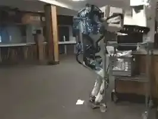
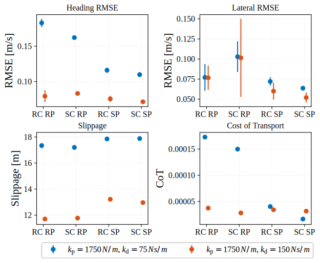

Hierarchical Quadratic Programming for Robot Control
Università di Pisa
July 31, 2025
Mathematical Framework: Hierarchical Quadratic Programming
Davide De Benedittis - Hierarchical Quadratic Programming
Model-Based Control
Davide De Benedittis - Hierarchical Quadratic Programming
Nonlinear Model Predictive Control
\[ \begin{align} & \min_x \; && f (x) \\ & \text{s.t.} \; && x \in X \end{align} \]
Davide De Benedittis - Hierarchical Quadratic Programming
Convex Model Predictive Control
\[ \begin{align} & \min_x \; && f (x) \\ & \text{s.t.} \; && x \in X \end{align} \]
\(f\) is convex
\(X\) is a convex set.
Davide De Benedittis - Hierarchical Quadratic Programming
Quadratic Programming (QP)
Subset of Convex Programming.
Both efficient to solve and descriptive.
\[ \begin{align} & \min_x \; && x^T Q x + p^T x \\ & \text{s.t.} \; && A x = b \\ & && C x \leq d \end{align} \]

Davide De Benedittis - Hierarchical Quadratic Programming
Problem ü§ï
Problem: solve a set of tasks that cannot be satisfied concurrently.
E.g., maintain an end-effector pose (task), avoid obstacles (safety), and minimize energy consumption (efficiency).

Davide De Benedittis - Hierarchical Quadratic Programming
Problem Formulation
Problem: solve a set of tasks that cannot be satisfied concurrently.
Solution: a tradeoff needs to be made among the tasks.
Two approaches can be adopted:
Weighted Approach
- A weight is assigned to each task
- All tasks solved together
- Tasks compromise each other
Hierarchical Approach
- A priority is assigned to each task
- Solved in a hierarchical way
- Low-priority tasks do not compromise higher-priority ones
Davide De Benedittis - Hierarchical Quadratic Programming
Solution Approaches
Techniques to deal with redundancy:
- Standard approach
- Singularity-robust approach
- Reverse priority approach
- Hierarchical Quadratic Programming (HQP)
Davide De Benedittis - Hierarchical Quadratic Programming
Tasks Definition
Consider a set of tasks \(T_p\) with \(p = 1, \dots, n_p\) in the general form \[ T_p = \left\lbrace \begin{matrix} A_p x - b_p = v_p \\ C_p x - d_p \leq w_p \end{matrix} \right. \]
where \(v_p\) and \(w_p\) are slack variables to be minimized.
(If the task is feasible, it will be \(v_p = 0\) and \(w_p = 0\).)
Davide De Benedittis - Hierarchical Quadratic Programming
Tasks Reformulation
A single task \(T\) is formulated as the following optimization problem \[ \begin{aligned} \min_{x, w} \quad & \|{Ax - b}\|_2^2 + \| w \|_2^2 \\ \textrm{s.t.} \quad & C x - d \leq w. \end{aligned} \]
Davide De Benedittis - Hierarchical Quadratic Programming
Hierarchical Quadratic Programming (HQP)
The solution is computed recursively, starting from the highest priority task \(T_1\).
- The global solution is denoted as \(\overline{x}^*_{p}\) and accounts for all higher priority tasks.
- The local solution is denoted as \(x^*_{p}\) and accounts only for the current task \(T_p\) and higher priority inequality constraints.
Davide De Benedittis - Hierarchical Quadratic Programming
Hierarchical Quadratic Programming (HQP)
The solution is computed recursively, starting from the highest priority task \(T_1\).
The solution up to task \(T_{p+1}\) is computed as \[ \overline{x}_{p+1}^* = \overline{x}_{p}^* + \overline{N}_p x_{p+1}^* \]
The null space projector \(\overline{N}_p\) is computed iteratively with \[ \overline{N}_p = \operatorname{Null} \left(\overline{A}_p \right) = \overline{N}_{p-1} \operatorname{Null} \left(A_p \overline{N}_{p-1} \right), \]
where \(\overline{A}_p = \begin{bmatrix} A_1^T & \cdots & A_p^T \end{bmatrix}^T\).
A null space projector can be computed using the SVD decomposition.
The algorithm is initialized with \(\overline{N}_0 = I\).
Davide De Benedittis - Hierarchical Quadratic Programming
Hierarchical Quadratic Programming (HQP)
\(\xi_{p+1}^* = \begin{bmatrix} x_{p+1}^* \\ w_{p+1}^* \end{bmatrix}\) is the solution of a QP problem whose non-null matrices are
\[ \begin{alignedat}{3} &Q_{p+1} &&= \begin{bmatrix} \overline{N}_p^T A_{p+1}^T A_{p+1} \overline{N}_p & 0 \\ 0 & I_{n_{w_{p+1}}} \end{bmatrix}, \quad &&p_{p+1} = \begin{bmatrix} \overline{N}_p^T A_{p+1}^T (A_{p+1}^T \hat{x}_p^* - b_{p+1}) \\ 0 \end{bmatrix}, \\ %%%%%%%%%%%%%%%%%%%%%%%%%%%%%%%%%%%%%%%%%%%%%%%%%%%%%%%%%%%%%%%%%%%%%%%%%%%% &\hat{C}_{p+1} &&= \begin{bmatrix} C_{p+1} \overline{N}_p & - I_{n_{w_{p+1}}} \\ \overline{C}_p \overline{N}_p & 0 \\ 0 & - I_{n_{w_{p+1}}} \end{bmatrix}, \quad &&\hat{d}_{p+1} = \begin{bmatrix} d_{p+1} - C_{p+1} \hat{x}_p^* \\ \overline{d}_{p} - \overline{C}_{p} \hat{x}_p^* + \overline{w}_p^* \\ 0 \end{bmatrix}, \\ %%%%%%%%%%%%%%%%%%%%%%%%%%%%%%%%%%%%%%%%%%%%%%%%%%%%%%%%%%%%%%%%%%%%%%%%%%%% & \overline{C}_{p} &&= \begin{bmatrix} C_p \\ \vdots \\ C_1 \end{bmatrix}, \quad && \overline{d}_p = \begin{bmatrix} d_p \\ \vdots \\ d_1 \end{bmatrix}, \quad \overline{w}_p^* = \begin{bmatrix} w_p^* \\ \vdots \\ w_1^* \end{bmatrix}. \end{alignedat} \]
Davide De Benedittis - Hierarchical Quadratic Programming
Soft Bilinear Inverted Pendulum ü¶ø
Davide De Benedittis, Franco Angelini, Manolo Garabini - Soft Bilinear Inverted Pendulum [1]
Classic Control Scheme
Davide De Benedittis, Franco Angelini, Manolo Garabini - Soft Bilinear Inverted Pendulum [1]
Two-Blocks Control Scheme
Davide De Benedittis, Franco Angelini, Manolo Garabini - Soft Bilinear Inverted Pendulum [1]
Introduction
Research Goal: consider the contact compliance in the control design.
Contributions:
- The Soft Bilinear Inverted Pendulum (SBIP) model is proposed and used in the Motion Planner design.​
- A Whole Body Controller is developed using Hierarchical Optimization and a soft contact model.​
- The improvements granted by considering the softness in the MP and the WBC are evaluated.​
- The proposed approach is tested in simulations and experiments.
Davide De Benedittis, Franco Angelini, Manolo Garabini - Soft Bilinear Inverted Pendulum [1]
Soft Bilinear Inverted Pendulum Model
Equations of motion of the SBIP model: \[ \begin{align} \ddot{x}_{CoM} &= \frac{g + \ddot{z}_{CoM}}{h_{CoM}} (x_{CoM} - x_{ZMP}) \\ \ddot{y}_{CoM} &= \frac{g + \ddot{z}_{CoM}}{h_{CoM}} (y_{CoM} - y_{ZMP}) \\ \ddot{z}_{CoM} &= - \ddot{\delta} = - g + 1/m (k_p \delta + k_d \dot{\delta}) \end{align} \]
Simplified model used to plan the base and feet trajectories over a long horizon.
The planner is a QP-based MPC that tracks a base velocity reference.
Davide De Benedittis, Franco Angelini, Manolo Garabini - Soft Bilinear Inverted Pendulum [1]
Tracking Controller
Full robot model used to plan over a short horizon with higher fidelity.
The equations of motion of a legged robot are \[ M(q) \ddot{q} + h(q, \dot{q}) = S^T \tau + J^T (q) f \] which can be split into the underactuated and actuated part as \[ \begin{align} M_a (q) \ddot{v} + h_a (q, v) &= \tau + J_a^T (q) f \\ M_u (q) \ddot{q} + h_u (q, v) &= J_u^T (q) f \end{align} \]
The optimization vector is \[ x_{opt} = \begin{bmatrix} \dot{v}^T & f^T & \delta_d^T \end{bmatrix}^T \]
From the optimization vector and the robot model, the joint torques are \[ \tau^* = M_a (q) \dot{v}^* + h_a (q, v) - J_a^T (q) f^* \]
| Priority | Tasks |
|---|---|
| 1 | Physical consistency |
| 2 | Actuation torque limits |
| Contact friction cone limits | |
| Force modulation | |
| 3 | Soft contact constraints |
| 4 | Base linear trajectory tracking |
| Base angular trajectory tracking | |
| Swing feet trajectory tracking | |
| 5 | Energy minimization |
| Contact forces minimization |
Davide De Benedittis, Franco Angelini, Manolo Garabini - Soft Bilinear Inverted Pendulum [1]
Validation in Simulation
ANYmal C robot
SOLO12 robot
Davide De Benedittis, Franco Angelini, Manolo Garabini - Soft Bilinear Inverted Pendulum [1]
Comparison in Simulation
State of the art -> failure
Proposed approach -> success
Davide De Benedittis, Franco Angelini, Manolo Garabini - Soft Bilinear Inverted Pendulum [1]
Comparison in Simulation
Four controller configurations compared using four KPIs and two different scenarios.
Davide De Benedittis, Franco Angelini, Manolo Garabini - Soft Bilinear Inverted Pendulum [1]
Experimental Results
Tested with the SOLO12 robot on a foam rubber terrain.
Flat ground
Inclined ground
Davide De Benedittis, Franco Angelini, Manolo Garabini - Soft Bilinear Inverted Pendulum [1]
SBIP Conclusion
- Considering the terrain characteristics in both components of a two-blocks control scheme is beneficial.
- SBIP model is a good compromise between fidelity and computational efficiency.
- HQP deals with tasks priorities effectively.
Davide De Benedittis, Franco Angelini, Manolo Garabini - Soft Bilinear Inverted Pendulum [1]
Keep It Cool üî•
Davide De Benedittis, Franco Angelini, Riccardo Incerpi, Lucia Pallottino, Manolo Garabini - Keep It Cool [2]
Problem
Actuators overheating during prolonged use.
Davide De Benedittis, Franco Angelini, Riccardo Incerpi, Lucia Pallottino, Manolo Garabini - Keep It Cool [2]
Introduction
Research Goal: guarantee thermal safety and optimal performance using control.
Contributions:
- Consider the thermal dynamics in the control design.
- HQP based approach for constraints prioritization.
- Ablation study to evaluate the impact on performance.
Davide De Benedittis, Franco Angelini, Riccardo Incerpi, Lucia Pallottino, Manolo Garabini - Keep It Cool [2]
Control Architecture
First order thermal model \[ \dot{T} = - \alpha (T - T_\text{amb}) + \beta | \tau | \]
Control Architecture
Optimization vector: \[ x = \begin{bmatrix} q^T & \dot{q}^T & T^T & \tau_s^T \end{bmatrix}^T \]
Tasks:
- Dynamic consistency, Thermal model, Epigraph reformulation
- Thermal safety, Safety limits
- Primary task (e.g., end-effector pose)
- Secondary tasks (e.g., control energy minimization)
Davide De Benedittis, Franco Angelini, Riccardo Incerpi, Lucia Pallottino, Manolo Garabini - Keep It Cool [2]
Results - Reach and Hold
Davide De Benedittis, Franco Angelini, Riccardo Incerpi, Lucia Pallottino, Manolo Garabini - Keep It Cool [2]
Davide De Benedittis, Franco Angelini, Riccardo Incerpi, Lucia Pallottino, Manolo Garabini - Keep It Cool [2]
Davide De Benedittis, Franco Angelini, Riccardo Incerpi, Lucia Pallottino, Manolo Garabini - Keep It Cool [2]
Results - Circle
Davide De Benedittis, Franco Angelini, Riccardo Incerpi, Lucia Pallottino, Manolo Garabini - Keep It Cool [2]
Davide De Benedittis, Franco Angelini, Riccardo Incerpi, Lucia Pallottino, Manolo Garabini - Keep It Cool [2]
Results - Lemniscate
Davide De Benedittis, Franco Angelini, Riccardo Incerpi, Lucia Pallottino, Manolo Garabini - Keep It Cool [2]
Davide De Benedittis, Franco Angelini, Riccardo Incerpi, Lucia Pallottino, Manolo Garabini - Keep It Cool [2]
Conclusion
- Considering the temerature dynamics in the control can avoid overdimensioning the hardware or downsizing the task.
- HQP effectively guarantees thermal safety.
- Other approaches (e.g., CBFs) can further enhance performance in certain scenarios.
Davide De Benedittis, Franco Angelini, Riccardo Incerpi, Lucia Pallottino, Manolo Garabini - Keep It Cool [2]
Conclusion üèÅ
Conclusion
Future Works – Multi-Robot Control
- Multi-robot setting
- HQP to manage multiple concurrent and potentially conflicting tasks
Heterogeneous coverage and battery recharging
Obstacle avoidance > centroid velocity reference > formation control
Davide De Benedittis, Manolo Garabini, Lucia Pallottino - Managing Conflicting Tasks with Hierarchical Optimization [3]
Future Works – Non-Uniform Time Sampling
Why: Constrained LQR (as most optimal control problems) assumes a uniform time sampling.
Core Idea: Embed the sampling durations into the optimization problem. Derive closed-form cost function and gradients that can be precomputed.
How: Use matrix exponentials to propagate the dynamics exactly.
Key Results: Provide both Single Shooting and Multiple Shooting formulations with analytical gradients.
Take-Away: Let the optimizer decide how to sample the horizon.
P. Gori, D. De Benedittis, M. Pierallini, F. Angelini, G. Pannocchia, M. Garabini - Optimal Non-Uniform Time Sampling [4]
References üìö
Grazie Per L’Attenzione (◕‿◕)
Contact me at:
- davide.debenedittis@phd.unipi.it
Davide De Benedittis